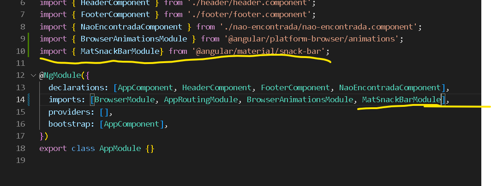
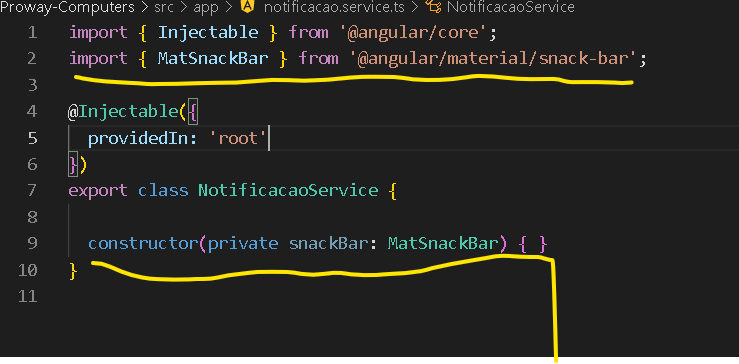
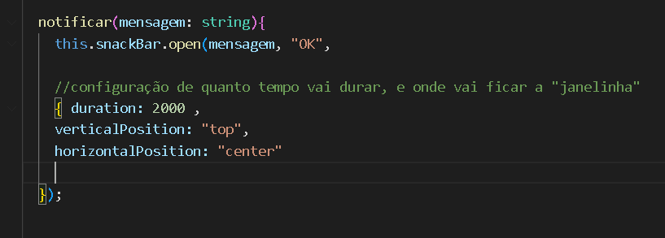
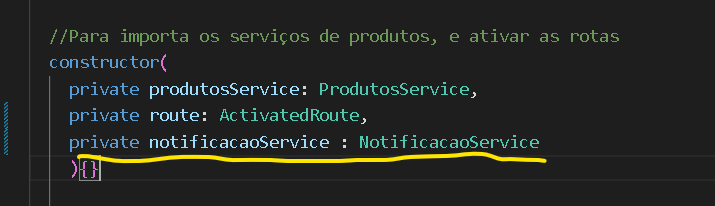
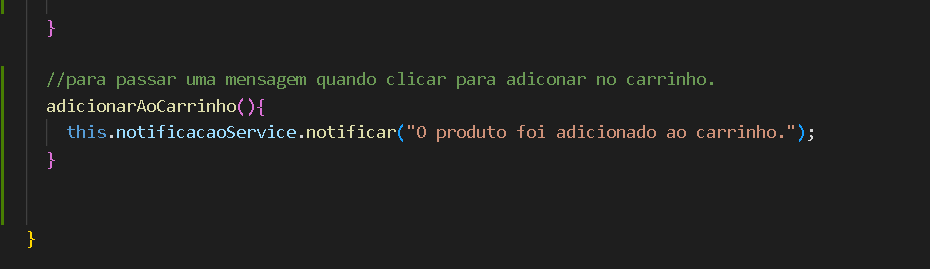

Notificação carrinho
Para mostrar uma mensagem de notificação, uma pequena "janelinha",
que vai aparecer na tela e ficar durante alguns segundos.
Para isso, vamos trabalhar com biblioteca que fornece componentes prontos.
Abra o site Angular,material,
Primeira coisa a fazer, é instalar essa biblioteca, para usar o que queremos.
Dentro da pasta do projeto, ultilize esse comando ng add @angular/material, e espere carregar.
Vai pedir para você, confirma se quer ou não instalar a biblioteca, coloque y, de yes, "sim".
Vai te pedir para escolher qual estilo você quer.
Vai pedir pra confirma se quer usar tipo de fonte dele.
Vai pedir pra confirma se quer usar ou não animações.
renicie a página, não deixa ela aberta, deve ser reniciada para adicionar essas novas configurações,
fecha a página, e abra novamente, usando o ng serve.
Para incluir os componentes da biblioteca dentro do nosso projeto,
terá que fazer um "import", do componente que vamos usar.
Vai no app-module.ts, e adicionar lá esse texto:
"import { MatSnackBarModule } from '@angular/material/snack-bar';", e adiciona também na parte de baixo.
Como está na imagem abaixo:

Agora vamos cria um serviço, que faça ele aparecer na página.
Primeiro, crie um componente usando esse comando ng g service notificacao.
Dentro do componente notificacao.service.ts, vamos ver como se faz para ele aparecer na página:
Vai no "construtor" e adiciona esses parametros:
constructor ( private snackBar: MatSnackBar) { }
Se não importa automaticamente, use o texto abaixo, na parte de "import":
import { MatSnackBar } from '@angular/material/snack-bar';
Como está na imagem abaixo:

Dentro do mesmo componente notificacao.service.ts.
Agora vamos cria um método, que vai mostrar a "janelinha", quando for acionado:
Na imagem abaixo está o código, de como deve ser feito:

Vai no componente detalhe-produto.component.ts,
no "constructor" você adiciona esse texto, para usar o serviço de notificação:
private notificacaoService : NotificacaoService
Como está na imagem abaixo:

Depois dentro da classe crie um método "adicionarAoCarrinho()",
o que ele vai fazer, por enquanto só vai mostrar a notificação.
Como está na imagem abaixo:

Agora vai no componente detalhe-produto.component.html,
adicione um "click", no botão acionando o método "adicionarAoCarrinho()",
Como na imagem, abaixo:

A primeira parte, para fazer o carrinho está pronto.